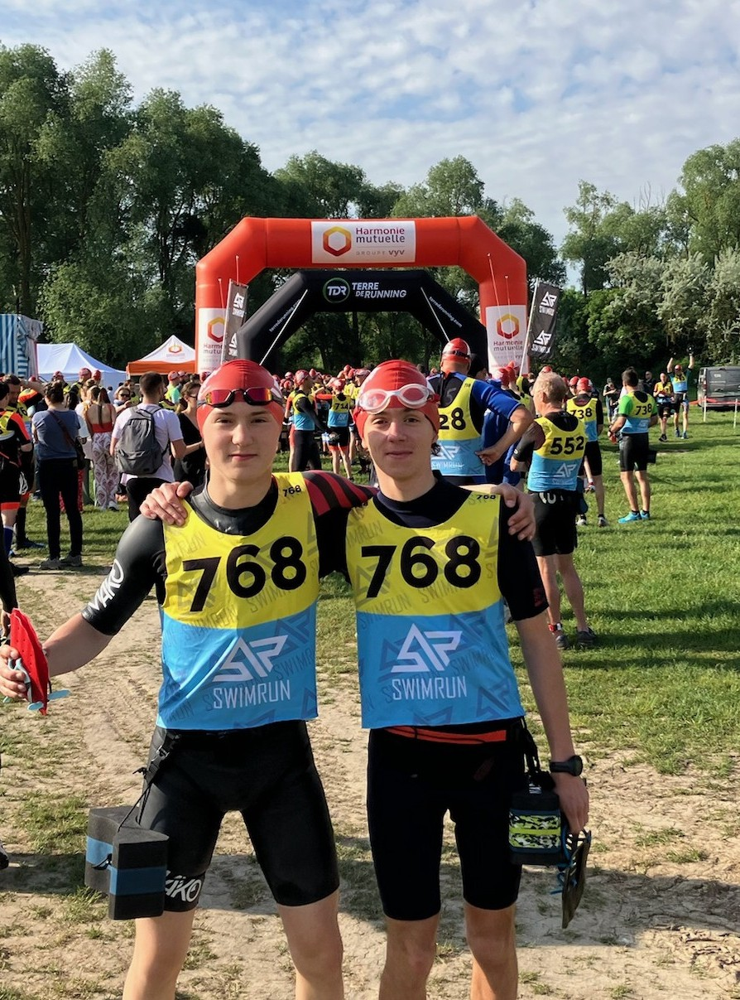
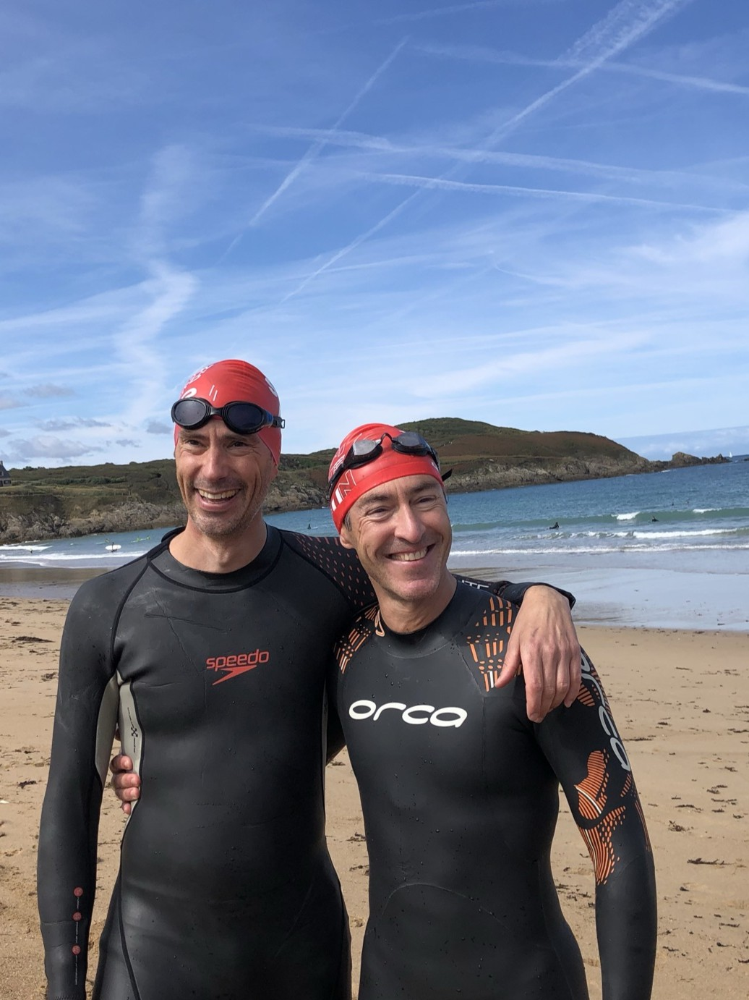

"Je loutre donc je suis" - Une loutre ancienne
"La vie est comme le swimrun, il faut savoir alterner" - Une loutre philosophe
"Plus on est de loutres, plus on rit" - Une loutre sociable
"Un esprit sain dans une loutre saine" - Une loutre sportive
"Le swimrun, c'est la liberté de choisir son élément" - Une loutre aventurière
"Seul on va vite, ensemble on va loin" - Une loutre sage
"L'important n'est pas la destination, mais les brasses qu'on donne" - Une loutre voyageuse
"Un pour tous, tous pour la loutre!" - Une loutre mousquetaire
Bienvenue aux Loutres !
Pas besoin d’être un pro pour nous rejoindre : il suffit juste d'aimer l'eau, la course et les loutres !
Le swimrun , c’est l’art de courir et nager dans la nature, sans jamais quitter ses baskets, son maillot, ni son binôme 😉
Notre association est née d'une envie simple: créer une communauté de swimrunners à Suresnes afin de s'entraîner ensemble et partager des moments conviviaux.
Comment s'organise l'entraînement des Loutres ?
C'est 100% gratuit ! Adhérez ici

Le binome junior

Le binome senior
Il n'y a pas d'entraîneur; l'idée est vraiment d'avoir un groupe de d'entraînement pour ne pas swimrunner seul !
Nous proposons aussi d'aller aux courses ensemble, en tant qu'équipe de loutres soudées, pour les plus competiteurs d'entres nous. Consultez notre agenda pour les prochaines compétitions.